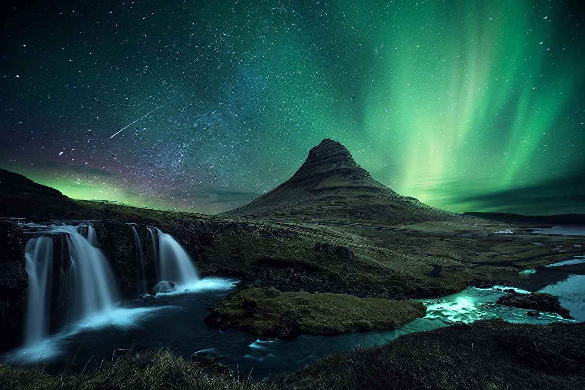

冰島的魅力：星空之外的自然奇觀
冰島，被譽為「冰與火之地」，以其壯麗的自然景觀和獨特的地理特徵而聞名。除了璀璨的星空，冰島還擁有許多令人驚嘆的旅遊景點和活動，讓每位旅客都能感受到這片土地的獨特魅力。 首先，壯觀的瀑布是冰島的一大亮點。著名的黃金圈內有壯觀的古佛斯瀑布，其水流從高處奔騰而下，形成巨大水霧，若在陽光下，還能看到美麗的彩虹。而斯科加瀑布和塞爾雅蘭瀑布更是讓人驚嘆的自然奇觀。 接著，冰島的冰川也是不容錯過的景點。瓦特納冰川是歐洲最大的冰川，遊客可以參加冰川健行，親自體驗冰川的壯麗與神秘。另有藍冰洞，這些天然形成的冰洞內部閃爍著藍光，彷彿置身於夢幻的冰雪世界。 再者，冰島的地熱溫泉也是一個讓人放鬆身心的好去處。著名的藍湖以其富含礦物質的溫泉水而受到遊客的青睞，這裡不僅能享受溫暖的水域，還能欣賞到四周壯麗的火山景觀。 最後，若你對野生動物感興趣，冰島也是觀賞鯨魚和北極狐的絕佳地點。在夏季，遊客可以參加鯨魚觀賞之旅，目睹這些海洋巨獸的壯觀身姿。 無論是欣賞星空、探訪瀑布，還是享受溫泉，冰島都將為你帶來難忘的旅遊體驗。這片神秘而美麗的土地，值得每位冒險者前來探索！
